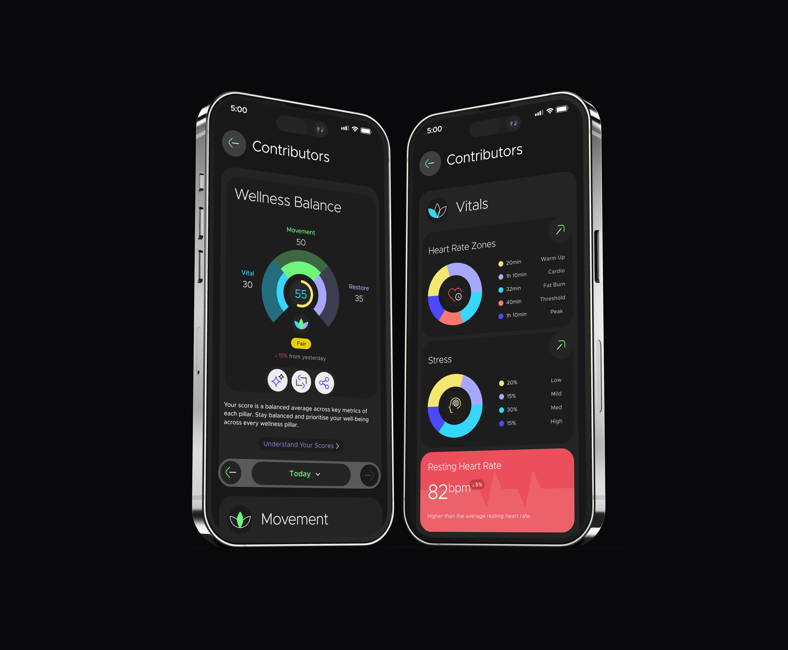

I design simple experiences
for complex products.
5+ years designing mobile, wearable and AI-powered health experiences that make complex data simple and easy to understand.
A personal coach built around your wearable data
AI Coach brings together wellness data, habits, fitness plans and daily guidance in one experience.
 Read full case study ↗
Read full case study ↗
Bringing many wellness metrics
into one simple view.
Wellness Balance combines Movement, Vitals and Restore to give users a quick view of how they are doing.

Read full case study ↗Product designer crafting AI and wearable health experiences.
I have 5+ years designing mobile, wearable and AI-powered products in the health and wellness space at KaHa Technologies (a boAt Lifestyle company) — delivering 600+ screens across 20+ features, including AI Coach, GPS and Wellness Balance, for products used by 2 crore+ people. My work spans user research, interaction design, prototyping, usability testing and design systems, and includes contributing to Watchface Studio, now a filed Indian patent.
Let's talk.
I'm open to product design opportunities and conversations about design.
kamalika005@gmail.com ↗